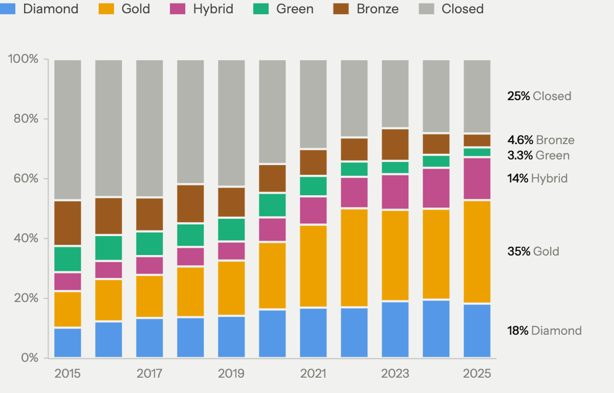

World Stroke Congress 2026 · Seoul
09 Finding 2

+18 points
gold, a paid route, 2015 to 2024
9% → 3%
green, a repository copy, 2015 to 2025
Share of stroke articles by OpenAlex status · 2025: counts complete; open-access status still settling